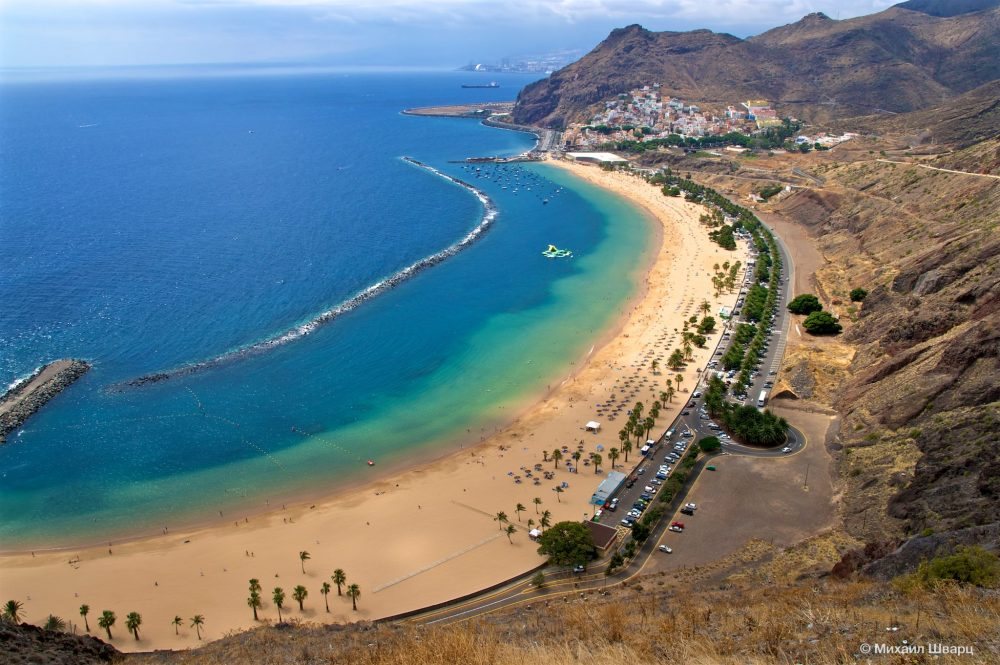
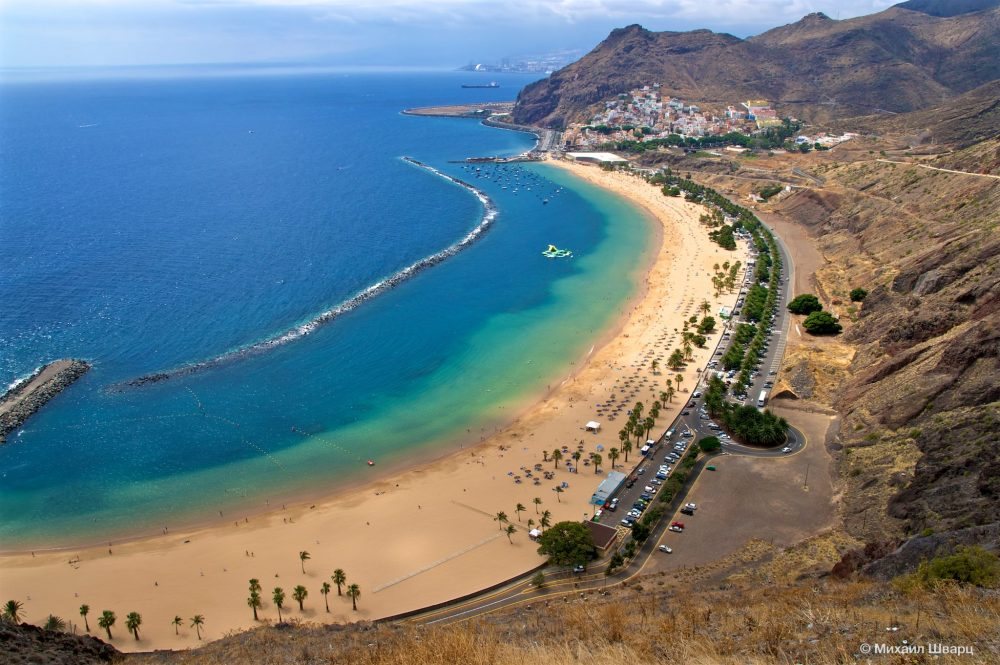

Spānija ir skaista valsts, kas piesaista miljoniem tūristu no visas pasaules ar savu kultūru, vēsturi, dabu un pludmalēm. Spānijas apmeklējums noteikti ir vērts pievienot savam ceļojumu sarakstam, un lūk, kāpēc.
Viena no galvenajām Spānijas apskates vietām ir tās galvaspilsēta Madride. Šajā pilsētā jūs varat baudīt mākslu slavenajā Prado muzejā, klīst pa šaurajām vecpilsētas ieliņām un izjust senās Spānijas gaisotni. Barselona arī ir pelnījusi īpašu uzmanību - šeit jūs atradīsiet pārsteidzošus Antoni Gaudi arhitektūras šedevrus, piemēram, Sagrada Familia un Güell parku.
Nedrīkst aizmirst arī par Spānijas dienvidu piekrasti, kur atrodas slavenie Costa del Sol un Costa Blanca kūrorti. Pateicoties siltajam Vidusjūras klimatam un smilšainajām pludmalēm, šīs vietas ir kļuvušas par īstu paradīzi atpūtai. Daudzas kūrortpilsētas, piemēram, Marbella, Benidorm un Ibiza, piedāvā dažādas aktivitātes, tostarp naktsklubus, restorānus un ūdens sporta veidus.
Spāņu ēdieni ir arī iemesls apmeklēt šo valsti. Šeit var baudīt gardēžu tapas – nelielas porcijas dažādu uzkodu, ko lieliski papildina vietējā vīna glāze. Paeljas - slavenā spāņu rīsu ēdiena ar jūras veltēm vai gaļu - garša jūs noteikti iepriecinās. Turklāt Spānija ir slavena ar svaigiem augļiem, olīvām un smaržīgajām eļļām, kas padara vietējo virtuvi par īstu gastronomisku baudījumu.
| Pilsēta | Populāras vietas |
|---|---|
| Madride | Puerta del Sol, Prado muzejs, Madrides Karaliskā pils |
| Barselona | Sagrada Familia, Park Güell, Barselonas futbola klubs |
| Sevilja | Alkazara, Seviļas katedrāle, Triāna |